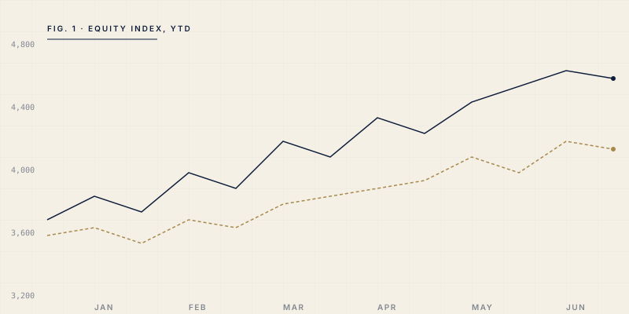

On the curve, the consumer, and the conditions for a durable expansion.
Each, on its own, plausible. Together, increasingly demanding.
Unemployment near a fifty-year low; prime-age participation now stalled after a year of gains.
Aggregate spending intact. Card delinquencies at sub-$75K incomes at twelve-year highs.
Two-ten positive for six weeks. The un-inversion has historically been the signal.
The yield curve has been wrong before. It is rarely wrong twice in a row about the same thing.— A managing director, name withheld
The rally from January has been carried by fewer than two dozen names.

The dispersion is the widest since Q4 2023.
Strip out the top twenty contributors and YTD return falls below 4%.
The advance-decline line is the leading indicator we trust most.